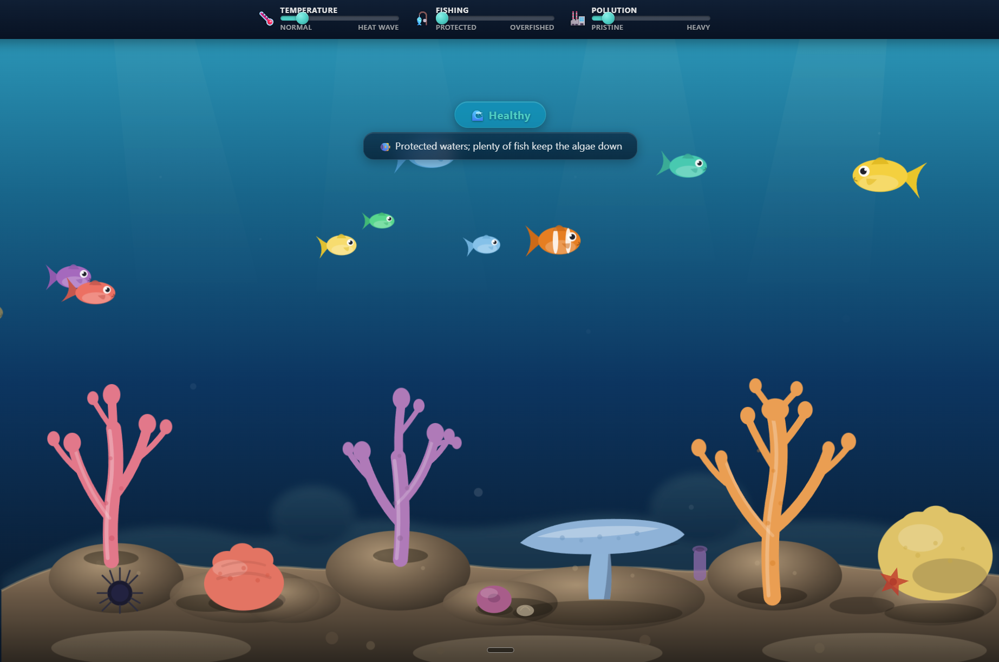
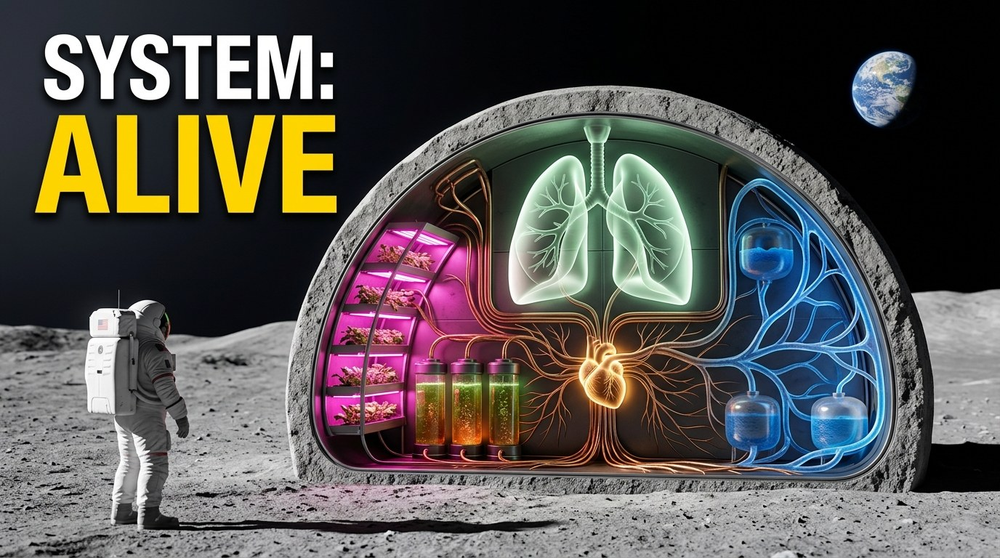
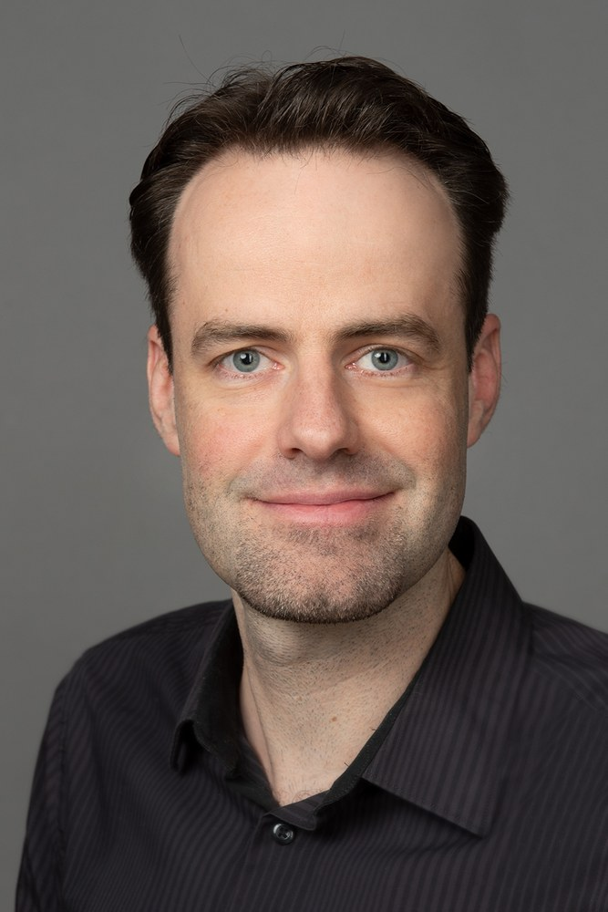

Ich baue Lernwelten,
I build learning worlds
in denen man komplexe lebende Systeme nicht auswendig lernt, sondern erlebt, durch Entscheidungen mit echten Konsequenzen.
where you don't memorize complex living systems, you experience them, through decisions with real consequences.

Promovierter Biologe & Scientific Learning Experience Designer. Vom Korallenriff in der Krise bis zur Mondbasis als Organismus. Wissenschaftliche Genauigkeit ist mein Ausgangspunkt, nicht mein Faktencheck am Schluss. Und ich baue end-to-end: Konzept, Didaktik, Drehbuch, Bild und Code.
Biologist (PhD) & Scientific Learning Experience Designer. From a coral reef in crisis to a moon base as a living organism. Scientific accuracy is my starting point, not a fact-check at the end. And I build end to end: concept, instructional design, script, visuals, and code.
Sechs Stücke, ein roter Faden: lebende Systeme begreifbar machen.
Six pieces, one common thread: making living systems tangible.
Coral Reefs on the Brink
Szenariobasierter eLearning-Kurs in vier Modulen. Man versteht ein Korallenriff als System, lernt seine Warnsignale zu lesen und trifft als „reef manager“ unter einer Code-Red-Hitzewelle echte Triage-Entscheidungen. Flugsimulator statt Lehrbuch.
A scenario-based eLearning course in four modules. You come to understand a coral reef as a system, learn to read its warning signs, and make real triage decisions as a “reef manager” during a Code Red heat wave. A flight simulator, not a textbook.
Angehende Meereswissenschaftler:innen, Oberstufe bis 1. Studienjahr · Englisch.
Aspiring marine scientists, upper secondary to first-year university · English.
Gedanken hinter dem DesignBehind the design
Mein vollständigster Beweis: ein kompletter 4-Modul-Kurs, allein konzipiert und gebaut, von der Riff-Biologie über das Lesen der Hitzestress-Diagnostik bis zur Entscheidung unter Druck. Dramatischer Höhepunkt ist das „Decision Lab“: Unter einer Code-Red-Hitzewelle trifft man Triage-Entscheidungen, sieht ihre Folgen und übt Urteilsvermögen unter Unsicherheit, statt Fakten abzurufen. Der Bogen führt am Ende ins Feld, bis zur Berufsorientierung, auch für Hochschulen zur Nachwuchsgewinnung.
My most complete proof of work: a full four-module course, conceived and built single-handedly, from reef biology through reading heat-stress diagnostics to deciding under pressure. Its dramatic high point is the “Decision Lab”: under a Code Red heat wave you make triage decisions, see their consequences, and train judgment under uncertainty instead of recalling facts. The arc leads into the field at the end, all the way to career orientation, useful for universities recruiting the next generation too.
Der widerspenstige Fachexperte
Microlearning, in dem man als L&D-Berater einen widerstrebenden Experten überzeugt, der ein Verhaltensproblem mit 140 Folien Theorie „erschlagen“ will. Aus der Verhandlung entsteht ein Praxisplan; zwei kleine Prototypen führen beispielhaft vor, wie man ihn in echtes Action Mapping übersetzt.
A microlearning piece where, as an L&D consultant, you have to win over a reluctant subject-matter expert who wants to “bury” a behavior problem under 140 slides of theory. The negotiation produces a practical plan; two small prototypes show how to translate it into real action mapping.
L&D, EdTech, Hochschule, Biotech/Healthcare, kein Pharma-Vorwissen nötig · Deutsch.
L&D, EdTech, higher education, biotech/healthcare, no pharma background needed · German.
Gedanken hinter dem DesignBehind the design
Mein Strategie- und Consulting-Beleg. Es zeigt, dass ich als strategischer Learning Consultant denke, nicht als bloßer Umsetzer: Ich erkenne ein Verhaltens- statt Wissensproblem, führe einen schwierigen Experten als Partner statt ihn zu überstimmen, und baue das Ganze als echte Verhandlung statt als verkleidetes Quiz. Drei plausible Optionen pro Stufe, bewusst nicht als richtig/falsch markiert; das Feedback erklärt jeweils das Prinzip dahinter.
My strategy and consulting credential. It shows that I think like a strategic learning consultant, not a mere implementer: I recognize a behavior problem rather than a knowledge problem, guide a difficult expert as a partner instead of overruling him, and build the whole thing as a real negotiation, not a quiz in disguise. Three plausible options at each stage, deliberately not marked right or wrong; the feedback explains the principle behind each one.
Threshold Reef

Eine browserbasierte Simulation eines Korallenriffs unter Klimadruck. Man bewegt drei Regler für reale Belastungen, Temperatur, Fischerei und Verschmutzung, und sieht das Riff darauf reagieren: Korallen bleichen, Algen überwuchern, das Wasser trübt sich. Treibt man das Riff über seinen Kipppunkt, schlägt es in einen algendominierten Zustand um.
A browser-based simulation of a coral reef under climate pressure. You move three sliders for real-world pressures, temperature, fishing and pollution, and watch the reef respond: corals bleach, algae take over, the water clouds. Push the reef past its tipping point, and it flips into an algae-dominated state.
Die Simulation selbst richtet sich an alle, die neugierig auf Korallenriffe sind; die fachliche Begleitseite an Institute und Fachleute. Englisch.
The simulation itself is for anyone curious about coral reefs; the specialist companion page is for institutes and experts. English.
Gedanken hinter dem DesignBehind the design
Korallenriffe stehen unter wiederholten Hitzewellen, und genau diese Krise habe ich in eine erfahrbare Lernwelt übersetzt, statt sie nur zu erklären. Man verschiebt selbst die Belastungen und erlebt, warum ein Riff nicht linear reagiert, an einem Kipppunkt umschlägt und sich danach nur mühsam erholt. Darunter arbeitet ein transparenter, wissenschaftlich erprobter Modellkern als Mittel zum Zweck; eine fachliche Begleitseite legt offen, was modelliert und was bewusst vereinfacht ist.
Coral reefs are facing repeated heatwaves, and I’ve turned that crisis into a learning world you can step into, rather than just explaining it. You move the pressures yourself and experience why a reef doesn’t respond in a straight line, why it flips at a tipping point, and why it only recovers slowly afterward. Underneath sits a transparent, scientifically grounded model core as a means to an end; a specialist companion page sets out what is modeled and what is deliberately simplified.
Your Body, But on the Moon

Long-form Science-Erklärvideo. Die Frage ist nicht „Wie bauen wir eine Mondbasis?“, sondern „Wie überlebt sie?“ Erzählt als lebender Organismus: Energie ihr Herzschlag, Luft ihre Lunge, Wasser ihre Blutbahn, Strahlenschutz ihre Haut.
A long-form science explainer. The question isn't “How do we build a moon base?” but “How does it stay alive?” Told as a living organism: energy is its heartbeat, air its lungs, water its bloodstream, radiation shielding its skin.
Wissenschaftsaffines Publikum · Englisch.
A science-minded audience · English.
Gedanken hinter dem DesignBehind the design
Das Stück, in dem das Systemdenken am sichtbarsten wird. Eine einzige Metapher trägt über zehn Minuten die ganze Erklärarchitektur, fundiert auf aktueller Wissenschaft und realen Pilotprojekten, mit sauber gekennzeichneter Spekulation.
The piece where systems thinking is most visible. A single metaphor carries the entire explanatory architecture across ten minutes, grounded in current science and real pilot projects, with speculation clearly marked as such.
Ökosystem-Detektiv
Ecosystem Detective
Zwei interaktiv ausfüllbare PDF-Lernhefte im Detektiv-Format. Schüler:innen spüren in illustrierten Ökosystem-Szenen versteckte „Eindringlinge“ auf, Tiere und Pflanzen, die nicht dorthin gehören; auf der Auflösungsseite erfährt man dann, warum, mit Anekdoten und Fachwissen im Kontext (Wald auf Deutsch, Ocean auf Englisch).
Two interactive fill-in PDF booklets in a detective format. In illustrated ecosystem scenes, students track down hidden “intruders”, animals and plants that don't belong there; the solution page then reveals why, with anecdotes and subject knowledge in context (Forest in German, Ocean in English).
Wald = Biologie Kl. 5–6, DACH · Ocean = Englisch, für CLIL/bilingualen Unterricht.
Forest = biology, grades 5–6, German-speaking countries · Ocean = English, for CLIL/bilingual teaching.
Gedanken hinter dem DesignBehind the design
Mein Beleg, dass ich fertige, marktreife Produkte abliefere: Beide Hefte sind auf Eduki veröffentlicht, der Wald-Detektiv trägt zusätzlich das „Best of eduki / Top Quality“-Siegel. Das Suchen ist nur die Einladung; der eigentliche Lerngewinn steckt im Warum, das die Auflösung liefert, im Wald mit der Pointe, dass ein Neobiot nicht stört, weil er hier nicht leben kann, sondern weil er zu gut lebt und Heimische verdrängt. Die Erklärungen sind fachlich geprüft und auf die jeweilige Stufe zugeschnitten.
My proof that I deliver finished, market-ready products: both booklets are published on Eduki, and the Forest Detective also carries the “Best of eduki / Top Quality” badge. The searching is only the invitation; the real learning sits in the why that the solution delivers, in the Forest with the twist that an invasive species is a problem not because it can't survive here, but because it thrives too well and crowds out the natives. The explanations are reviewed for accuracy and tailored to each level.
The Science of Being Human
YouTube-Bildungskanal mit animierten Erklärvideos zur Wissenschaft hinter menschlichem Verhalten: angewandte Psychologie und Neurobiologie in greifbaren visuellen Metaphern.
An educational YouTube channel with animated explainers on the science behind human behavior: applied psychology and neurobiology in tangible visual metaphors.
Für alle, die verstehen wollen, warum wir ticken, wie wir ticken · Englisch.
For anyone curious about what makes us tick · English.
Gedanken hinter dem DesignBehind the design
Beleg einer zusätzlichen Fähigkeit: eigenständig produzieren und schneiden, harte Wissenschaft zugänglich erzählen, ohne sie zu verwässern. Rundet das Profil ab.
Proof of an additional skill: producing and editing on my own, telling hard science in an accessible way without watering it down. It rounds out the profile.
Drei Überzeugungen tragen jedes Stück.
Three convictions run through every piece.
Systemdenken
Systems thinking
Ich erzähle alles als zusammenspielende Teile, in denen das Versagen eines Teils das Ganze gefährdet: Riff, Mondbasis-Organe, Ökosystem-Netz. Mein Biologen-Hirn ist ein Systemhirn.
I tell everything as interacting parts, where the failure of one part endangers the whole: the reef, the organs of a moon base, the web of an ecosystem. My biologist's brain is a systems brain.
Vom Vermitteln zum Anwenden
From teaching to doing
Ich baue Orte zum Anwenden, nicht zum Auswendiglernen: einen Flugsimulator fürs Riff-Management, eine verzweigte Verhandlung, einen Detektivfall, in dem man aufspürt, was nicht in ein Ökosystem gehört. Man wendet Wissen an, statt es nur abzurufen, und übt so Urteilsvermögen.
I build places to apply knowledge, not just to memorize it: a flight simulator for reef management, a branching negotiation, a detective case where you spot what doesn't belong in an ecosystem. You apply knowledge instead of merely recalling it, and that is how you train judgment.
Wissenschaftliche Strenge als Fundament
Scientific rigor as the foundation
Ich bin promovierter Biologe. Genauigkeit ist mein Ausgangspunkt, nicht mein Faktencheck am Schluss. Korrektheit ist eingebaut: von der fachlichen Prüfung jeder Aussage bis zur sauberen Trennung von gesichertem Wissen, Extrapolation und Spekulation im Mondbasis-Video.
I am a biologist (PhD). Accuracy is my starting point, not a fact-check at the end. Correctness is built in: from checking every claim against the science to the clean separation of established knowledge, extrapolation, and speculation in the moon base video.
Ich nutze KI als kontrollierte Produktionspipeline, gezielt gesteuert, nicht als Spielzeug. Der Doppelvorteil: Tempo durch Orchestrierung, Vertrauen durch wissenschaftliche Kontrolle.
I use AI as a controlled production pipeline, precisely directed, not as a toy. The double advantage: speed through orchestration, trust through scientific control.

Promovierter Biologe, der Lernwelten baut.
A biologist (PhD) who builds learning worlds.
Ich bin promovierter Molekularbiologe, aber meine Arbeit kreist heute stärker um ganze Ökosysteme als um einzelne Moleküle. An der Universität Bremen und am Leibniz-Zentrum für Marine Tropenforschung (ZMT) habe ich tropische Meeresökologie studiert, mit persönlichem Schwerpunkt auf Korallenriffen. Was mich an der Biologie immer am meisten gepackt hat, ist nicht das Einzelteil, sondern das Zusammenspiel: wie aus Molekülen Zellen werden, aus Zellen Organismen, aus Organismen ganze Ökosysteme. Lebende Systeme, in denen ein Eingriff an einer Stelle überall nachhallt. Diese Faszination ist der rote Faden durch alles, was ich gestalte, vom Korallenriff bis zur Mondbasis.
I'm a molecular biologist by training (PhD), but my work today revolves more around whole ecosystems than around single molecules. At the University of Bremen and the Leibniz Centre for Tropical Marine Research (ZMT), I studied tropical marine ecology, with a personal focus on coral reefs. What has always gripped me most about biology isn't the single part, but the interplay: how molecules become cells, cells become organisms, organisms become whole ecosystems. Living systems, where an intervention in one place echoes everywhere. That fascination is the thread running through everything I design, from a coral reef to a moon base.
Erklären gehört dazu, das mache ich klar und sauber. Aber wo es ums Abwägen geht, höre ich da nicht auf, sondern baue einen Ort zum Anwenden: ein Riff, dessen Schutz man unter einer Hitzewelle selbst steuert, eine Verhandlung, die man gegen einen widerstrebenden Experten führt, oder eine echte Simulation, in der man ein Korallenriff über seinen Kipppunkt drückt und erlebt, wie schwer es zurückzuholen ist. Man entscheidet, sieht die Folgen, und genau dieses Abwägen lässt sich nicht auswendig lernen.
Explaining is part of it, and I do that clearly and cleanly. But where judgment is involved, I don't stop there; I build a place to apply it: a reef whose protection you steer yourself through a heat wave, a negotiation you carry out against a reluctant expert, or a genuine simulation in which you push a coral reef past its tipping point and feel how hard it is to bring back. You decide, you see the consequences, and that kind of judgment can't be memorized.
Wenn du willst, dass Lernende ein Thema erleben statt es abzuarbeiten, dann lass uns reden.
If you want learners to experience a topic rather than just work through it, let's talk.